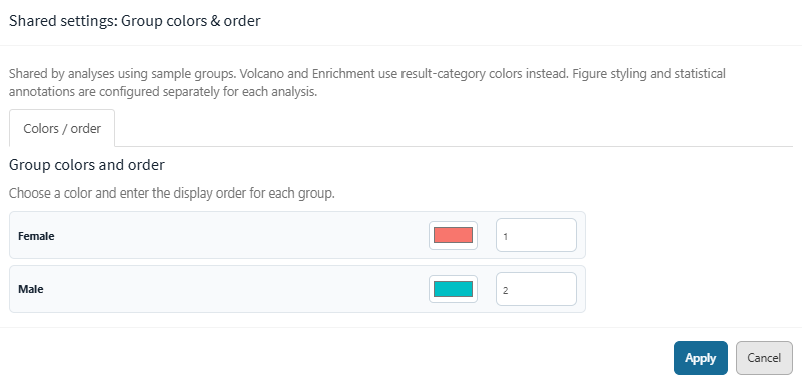

Figure settings
Customize figures and set shared sample-group colors and display order.
Customize figures
Use Figure settings in each analysis to adjust plot appearance. Feature, PCA, and OPLS-DA have their own figure controls.
Set group colors and display order
- Click Shared: colors / order at the top of an analysis page.
- In Group colors and order, click the color swatch for each group to choose a color.
- Enter the desired display order for each group. In the example, Female is
1and Male is2. - Click Apply to save the shared settings.


These settings are shared by analyses that use sample groups. Volcano and Enrichment use their own result-category colors. Figure styling and statistical annotations are configured within each analysis.